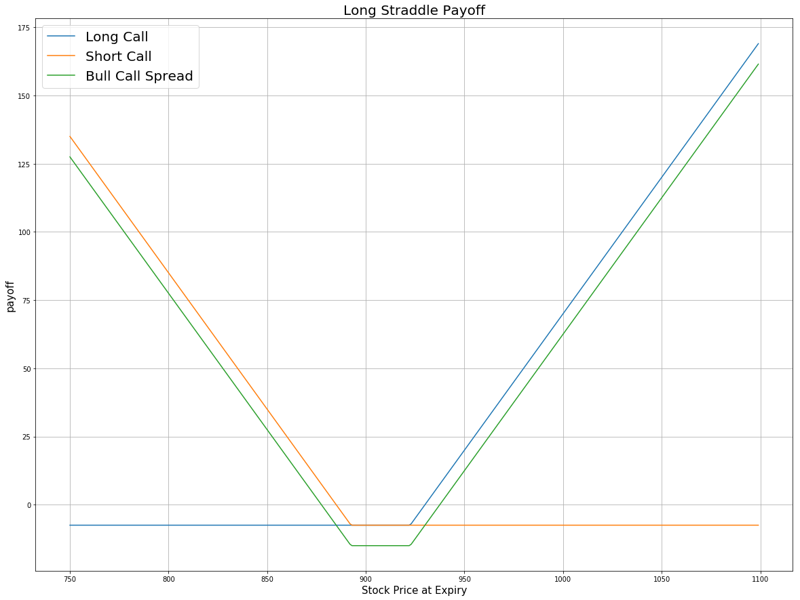

Definition
Long Straddle is an option strategy involved with the long position of a call option and a put option. Both of them have the same strike price and the same expiration date. This strategy aims to gain profit when you feel that a stock was about to make a big move, but are not sure which way the price will move.
Payoff
price = np.arange(750,1000,1)
strike = 900 # strike price for both call and put
premium_call = 20 # premium of call option
premium_put = 10 # premium of put option
# payoff for the long call
payoff_long_call = [max(-premium_call, i-strike-premium_call) for i in price]
# payoff for the long put
payoff_long_put = [max(-premium_put, strike-i-premium_put) for i in price]
payoff = np.sum([payoff_long_call, payoff_long_put], axis=0)
plt.figure(figsize=(20,15))
plt.plot(price, payoff_long_call, label = 'Long Call')
plt.plot(price, payoff_long_put, label = 'long put')
plt.plot(price, payoff, label = 'Long Straddle')
plt.legend(fontsize = 20)
plt.xlabel('Stock Price at Expiry',fontsize = 15)
plt.ylabel('payoff',fontsize = 15)
plt.title('Long Straddle Payoff',fontsize = 20)
plt.grid(True)

Given this plot, if the stock price moves sharply at the expiration either up or down, the Long Straddle will collect positive profit. the potential profit is unlimited on the upside because the stock price can rise indefinitely. On the downside, the potential profit is substantial, because the stock price can fall to zero. The potential loss is limited to the premium of both call and put options. The maximum loss will be reached if the stock price is exactly equal to the strike price at expiration. Both options will expire worthless.
Implementation
Step 1: Initialize your algorithm and filter the contract. Here we choose the time to expiration between 30 to 60 days from now on.
def Initialize(self):
self.SetStartDate(2017, 4, 01)
self.SetEndDate(2017, 6, 30)
self.SetCash(100000)
equity = self.AddEquity("GOOG", Resolution.Minute)
option = self.AddOption("GOOG", Resolution.Minute)
self.symbol = option.Symbol
# set our strike/expiry filter for this option chain
option.SetFilter(-5, 5, timedelta(30), timedelta(60))
# use the underlying equity GOOG as the benchmark
self.SetBenchmark(equity.Symbol)
Step 2: Sorted the option chain by expiration and choose the furthest date to filter the call contract. Then sorted those call contracts by their strike price and choose the call contracts with the highest strike price to trade.
for i in optionchain:
if i.Key != self.symbol: continue
chain = i.Value
# sorted the optionchain by expiration date and choose the furthest date
expiry = sorted(chain,key = lambda x: x.Expiry, reverse=True)[0].Expiry
# filter the call options from the contracts expires on that date
call = [i for i in chain if i.Expiry == expiry and i.Right == 0]
# sorted the contracts according to their strike prices
call_contracts = sorted(call,key = lambda x: x.Strike)
if len(call_contracts) == 0: continue
self.call = call_contracts[0]
Step 3: According to the call option contract, choose the put option with the same strike price and the same expiration date. Then buy the call option and the put option at the same time and wait until expiration.
for i in chain:
if i.Expiry == expiry and i.Right == 1 and i.Strike ==call_contracts[0].Strike:
self.put = i
self.Buy(self.call.Symbol ,1)
self.Buy(self.put.Symbol ,1)
Summary
There are three possible outcomes at expiration for the Long Straddle strategy. If the stock price is at the strike price at expiration, then both the call and the put become worthless and no stock position is created. If the stock price is above the strike price at expiration, the put option expires worthless, the long call is exercised, the stock is purchased at the strike price and a long stock position for is created. If the stock price is below the strike price at expiration, the call expires worthless, the long put is exercised, the stock is sold at the strike price and a short stock position is created. In this algorithm, the undelying asset is GOOG stock. We purchase both the $820 put and the $820 call at time 0. At the expiration, the share price of GOOG rises to 930 then the call option is exercised and the put options become worthless. After expiration, we hold long position for 100 shares of GOOG stock.
Algorithm